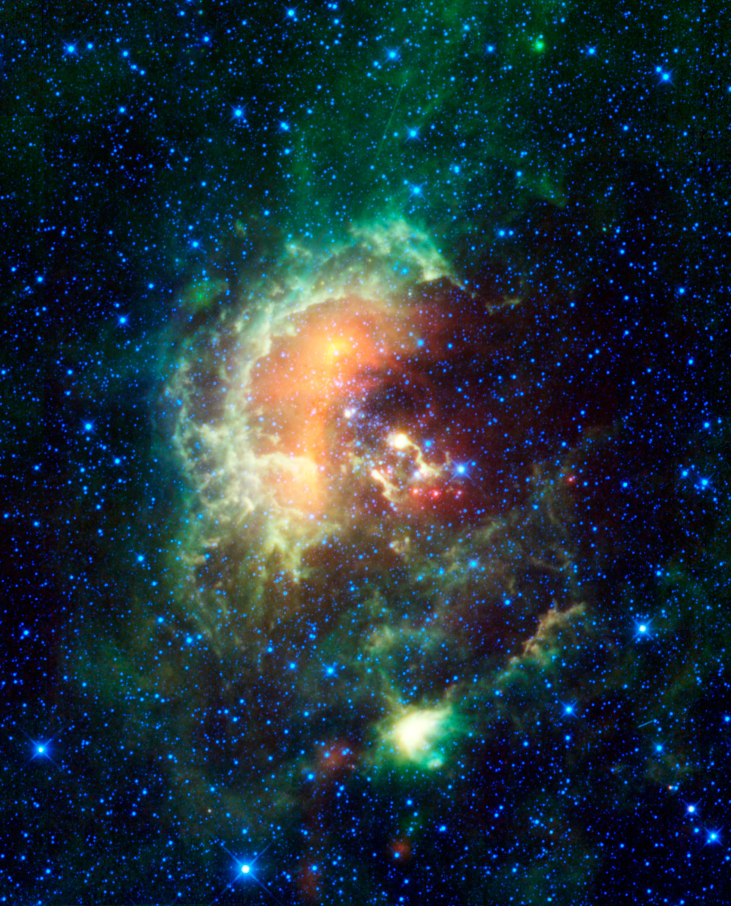
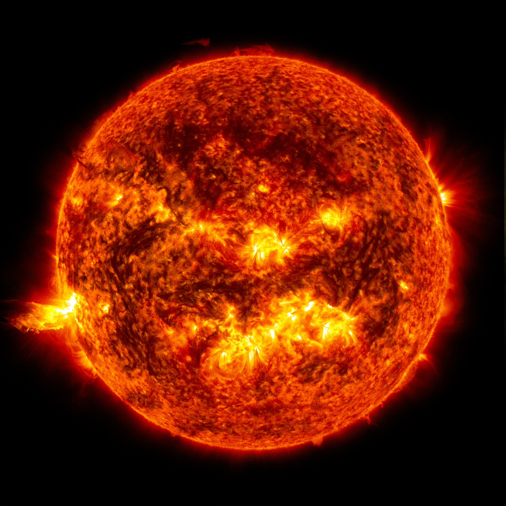

About The Skies.
A definitive inquiry into the thermodynamic collapse of massive stellar cores, relativistic tidal forces at black hole singularities, and higher-dimensional inflationary cosmology.
01. Core-Collapse Supernovas

Stellar evolution is a continuous struggle between outward radiation pressure produced by nuclear fusion and inward gravitational collapse. In stars exceeding eight solar masses, successive fusion stages synthesize progressively heavier nuclei?hydrogen into helium, followed by carbon, neon, oxygen, and silicon?forming a concentric, stratified elemental structure.
The sequence terminates at Iron-56 (??Fe). Because iron possesses the highest nuclear binding energy per nucleon of any isotope, further fusion is endothermic, absorbing ambient thermal energy rather than liberating it. Deprived of outward radiation support, hydrostatic equilibrium instantly fails.
When the degenerate iron core surpasses the Chandrasekhar limit (approximately 1.44 solar masses), relativistic electron degeneracy pressure collapses. Electrons are forced into atomic protons via electron capture, generating an enormous flux of electron neutrinos while converting the entire core into degenerate neutronium.
The collapse proceeds at nearly a quarter the speed of light until the core density reaches nuclear saturation (3 ? 10?? g/cm?). The strong nuclear force causes the central core to bounce elastically, driving a violent hydrodynamic shockwave that unbinds the outer stellar envelope and distributes forged heavy elements across the galaxy.
02. Spaghettification & Tidal Metrics
When the remnant mass of a collapsed star exceeds the Tolman-Oppenheimer-Volkoff limit (roughly 2.17 solar masses), neutron degeneracy pressure is insufficient to arrest gravitational collapse. Space-time is warped infinitely, forming an event horizon from which neither electromagnetic radiation nor baryonic matter can escape.
Inside the Schwarzschild radius, the radial coordinate becomes timelike, meaning that motion toward the central singularity is as inexorable as the forward passage of time itself. The geometry of space-time within this regime is characterized by extreme gravitational gradient differentials.
As an extended body descends toward the event horizon, the gravitational acceleration experienced by the radial extremity closest to the singularity markedly exceeds the acceleration experienced by the distant extremity. The differential tidal acceleration is expressed by the gradient tensor:
?a_radial ? 2 G M ?r / r?
Simultaneously, convergent geodesic lines compress the object laterally. The combined forces stretch the body along the radial vector into an infinitesimal filament while compressing its orthogonal axes?a rigorously documented physical phenomenon termed Spaghettification.
03. The Multiverse & Large-Scale Structure

The horizon problem and the observed spatial flatness of the cosmic microwave background strongly validate Alan Guth and Andrei Linde's theory of Cosmic Inflation. In early cosmological epochs, an inflaton scalar field drove exponential, superluminal spatial expansion of space-time by a factor greater than 10?? within 10??? seconds.
In eternal chaotic inflation models, quantum fluctuations prevent the scalar field from decaying simultaneously across all spatial patches. While inflation ceased in our local bubble roughly 13.8 billion years ago, it continues uninterrupted elsewhere, ceaselessly spawning isolated pocket universes separated by perpetually expanding de Sitter space.
Concurrently, in the Everett Many-Worlds interpretation of quantum mechanics, universal wavefunctions do not undergo wave function collapse during observation. Instead, each decoherence event branches state space into mutually orthogonal, non-interacting parallel histories of reality.
When evaluated alongside String Theory's compactified Calabi-Yau manifolds?which permit up to 10??? distinct metastable vacuum states?cosmological theory implies that the fundamental constants of our universe (such as the fine-structure constant and cosmological constant) may not be unique, but merely local realizations within an infinite cosmic landscape.